SECTION A (25 marks)
Answer all the questions in this section in the splices provided.
1. Explain why the walls of a studio are padded with woollen materials.(2 marks)
2. State one characteristic of soft X-rays that distinguish them from hard X-rays.(1 marks)
3. Figure 1 shows a bar magnet AB suspended by a string.
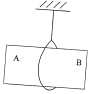
When the North pole of another magnet is brought close to end A, there is repulsion. State the polarity of end B. (1 mark)
4. State what happens to the image formed by a pin hole camera when the size of the hole is increased. (1 mark)
5. The angle of incident for a ray of light moving from air to a certain liquid is 30°. Given that the refractive index of the liquid is 1.36, determine the angle of refraction. (2 marks)
6. An electric kettle is rated 1.8 kW, 240 V. Determine the rating of the fuse that may be used in the kettle. (3 marks)
7. Figure 2 shows the image of an object O placed on the principle axis of a convex mirror.
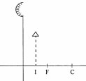
On the figure, draw a ray diagram to locate the object. (3 marks)
8. Define radioactivity.(1 mark)
9. A transformer has 600 turns in the primary coil and 9000 tums in the secondary coil. If the transformer is 100% efficient and the current in the secondary coil is 0.15A, determine the current in the primary coil. (3 marks)
10. The sharp point of a pin is brought near the cap of a positively charged electroscope. State and explain the observation made on the leaf of the electroscope. (3 marks)
11. Arrange the following radiations in the order of increasing wavelengths;
Purple light, Gamma rays, infrared and ultraviolet.(1 marks)
12. State the purpose of manganese (IV) oxide in a dry cell.(1 mark)
13. State the meaning of the term battery.(1 mark)
14. Figure 3 shows two current-carrying wires A and B passing through a cardboard.
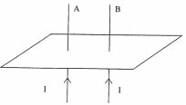
On the diagram, sketch the magnetic field lines around the wires to show how the fields interact.(2 marks)
SECTION B (55 marks)
Answer all the questions in this section in the spaces provide.
15. (a) Electrical energy is transmitted at very high voltages and low current.
(i) Describe how the high voltages are attained. (1 mark)
(ii) State two reasons why thick aluminium wires are preferred to copper wires for transmission over long distances. (2 marks)
(b) Figure 4 shows an electric cooker connected to the mains supply. X, Y and Z are the mains wires.
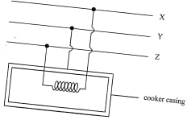
State with a reason the name of wire Y. (2 marks)
(c) A student has some coloured bulbs rated 60 W, 240 V to be connected for decorations.
(i) State the number of such bulbs that can be connected normally to a 240V supply through a 5A fuse. (2 marks)
(ii) If the cost of electric energy is Ksh 3.00 per kWh, determine the cost of running the bulbs in (c) (i) for 5 hours daily for 20 days. (3 marks)
16. (a) State the meaning of the following terms:
(i) Photoelectric effect(1 marks)
(ii) Threshold frequency(1 marks)
(b) Figure 5 shows some light incident on the cathode of a photocell. The photocell is connected in series with a battery, a variable resistor and a microammeter.
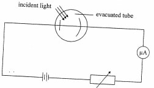
(i) Explain how the microammeter reading is affected when the intensity of the incident light is increased. (2 marks)
(ii) State the reason why the tube is evacuated. (1 mark)
(c) Figure 6 shows a graph of maximum kinetic energy (KEmas) of photoelectrons against the frequency of the incident radiation.
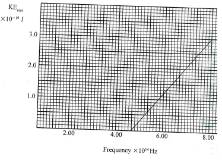
From the graph, determine:
(i) Plank’s constant h, (3 marks)
(ii) the threshold wave length k, given that the speed of light C is 3.0 X 10'ms°'. (3 marks)
17. (a) Water waves from a certain source move from the shallow end to the deep end. State the change that occurs at the deep end on the following:
(i) Frequency(1 marks)
(ii) Wavelength(1 marks)
(iii) Velocity(1 marks)
(b) (i) A biconvex lens forms an upright image twice the size of the object. If the focal length of the lens is 20 cm, determine the object distance. (4 marks)
(ii) State two optical instruments which produce a magnified real image using a convex lens. (2 marks)
(c) State one difference between the working of the human eye and the lens of a camera. (1 mark)
(d) A lens of focal length 20 cm forms a virtual image when an object is placed 60 cm from the lens. State with a reason the type of lens used. (2 marks)
18. (a) (i) Draw a circuit diagram showing the depletion layer of a n junction diode connected in the reverse bias mode. (2 marks)
(ii) State the reason why increasing the external voltage in (i) makes the depletion layer wider. (1 mark)
(iii) State the meaning of breakdown voltage of a junction diode. (1 mark)
(iv) State one application of diodes
(b) Figure 7 shows the output on a screen of a CRO when an a.c. signal is connected to the y-plates with the time base on.
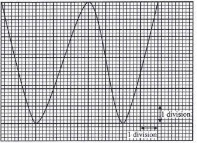
(I) frequency of the a.c. signal (2 marks)
(II) peak voltage of the input signal (3 marks)
(ii) State the adjustment that may be made inoder to halve the frequency of the ac. signal(2 marks)
19. Figure 8 shows two waves of nearly equal frequency produced simullaneously.
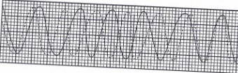
On the space provided, sketch the resultant of the two waves (beats). (2 marks)
(b) Figure 9(a) and 9(b) show barriers placed in the path of plane waves.
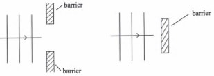
On each figure, sketch the pattern of waves after they pass the barrier. (2 marks)
(c) Figure 10 shows a displacement—distance graph for a certain wave motion. displacement (cm)
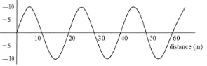
(i) Indicate on the figure with letters A and B any two points that are in phase. (1 mark)
(ii) Determine the:(1 marks)
(I) amplitude of the wave(1 marks)
(II) wavelength of the wave(1 marks)
(iii) Given that the frequency of the waves is 50 Hz, determine the:
(I) period (1 marks)
(II) speed of the wave (3 marks)
Sounds produced in the studio are reflected by the walls producing echoes in the room; that interfere with the signals transmitted. The woolen materials will absorb the sound hence reduce the echo effects.
Hard x-rays have a higher frequency than soft x-ray. Hard x-rays have more penetrating power than soft x-rays.
End B is a south pole.
The image is blurred.
Sin i = q Sin r Sin30/sinx = 1.36
Sin30/i.36 = Sin x
x = 21.6°
I = p/v
180/240
= 7.5A
Fuse rating of 8A is suitable.
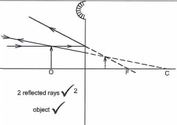
Spontaneous disintegration of atomic nuclei by emission of radiations.
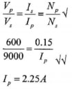
The leaf collapses
— Negative charge is induced on the tip of the pin. Pin repels negatively charged fair ions which discharges the electroscope).
11. Arrange the following radiations in the order of increasing wavelengths; Purple light, Gamma rays, infrared and ultraviolet.(1 marks)
Gamma, ultraviolet, purple light, infrared.
It acts as a depolarizer.
A battery is a group of cells connected in series or parallel.
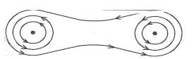
Field around each wire attraction.
By use of step-up transformers low input voltages are stepped up to high voltages for transmission.
They are cheaper They are lighter / lower density / lower weight
Y is the earth wired, it is connected to the casing of the cooker.
(i) State the number of such bulbs that can be connected normally to a 240V supply through a 5 A fuse. (2 marks)
I = P/v
60/240 = 0.25A
No. of bulbs = 20/0.25
=20
Cost = Power x time x rate)
60/1000 X 20 x 5 x 20 x 3
= ksh. 360.00
The emission of electrons from a metal surface when light/ electromagnetic radiations shine on it.
The minimum frequency of radiation required to eject electrons from a metal surface.
Increased intensity increases the number of electrons emitted( hence a higher current reading on the microammeter.
To minimize collisions between electrons and air molecules which would cause loss of energy.
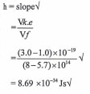
(ii) the threshold wavelength k, given that the speed of light C is 3.0 X 10'ms°'. (3 marks)
No change in frequency
Wavelength increases
Velocity increases
Image is virtual hence magnification = —2
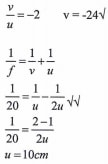
A film projector A compound microscope
In a camera focusing is done by changing the distance between the lens and the film.
While in the eye focusing is done by changing the curvature of the lens.
Diverging lense Forms a virtual image when the object distance ls greater than the focal length.
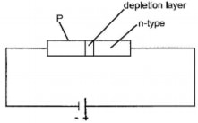
The holes and the electrons in their respective regions are attracted away from the junction by the external voltage.
The voltage at which the diode begins to conduct in the reverse bias mode.
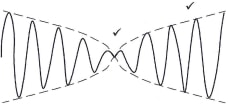
1 mark for maximum displacement1 mark for minimum displacement
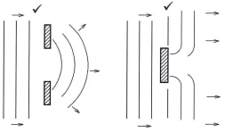
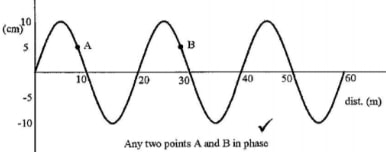
Amplitude = 10cm
Wavelength = 20m
I T =1/f = 1/50
0.2s
v = fx
=20 x 50
= J 000 ms-1